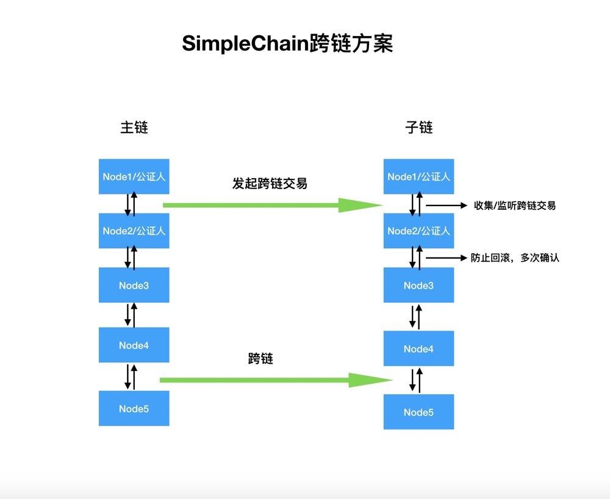
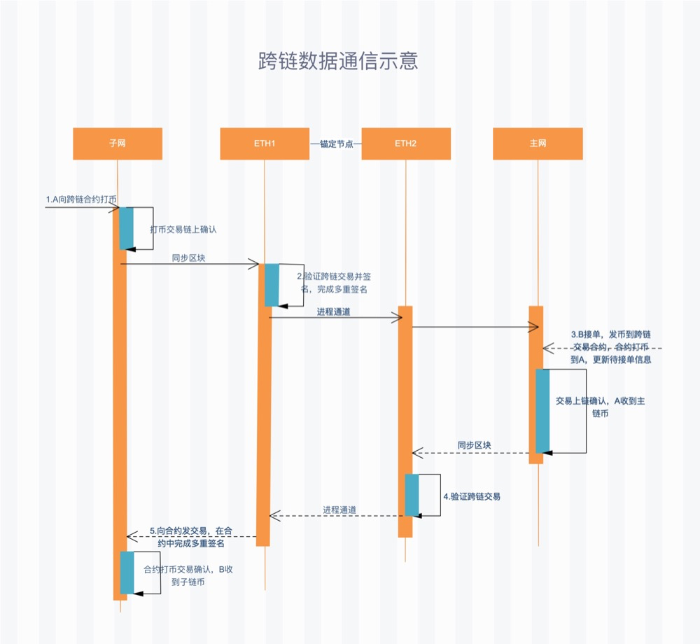

Free notary mechanism
Cross-chain interaction can be divided into homogeneous chain cross-chain and heterogeneous chain cross-chain according to the different underlying technology platforms of the blockchain: security mechanism between homogeneous chains, consensus algorithm, network topology, the block generation validation logic is consistent, and the cross-chain interaction between them is relatively simple. The cross-chain interaction of heterogeneous chains is relatively complex, suchSimplechain using PoW algorithm and EOS using POS consensus algorithm, the composition form of the two blocks and the certainty guarantee mechanism are very different, and the direct cross-chain interaction mechanism is not easy to design. Cross-chain interaction between heterogeneous chains generally requires third-party auxiliary services to assist cross-chain interaction. Therefore, when designing cross-chain solutions, we need to design a set of synthesis
Compare the current mainstream cross-chain solutions and the comprehensive performance of cross-chain solutions, and consider the later upgrade of the solution. Simplechain technical team has designed its own cross-chain scheme on the notary mechanism-the free notary mechanism. Why is this cross-chain technical solution selected?
In the mode of "Notary Public", the single "notary public" mechanism operates in a relatively centralized way, because the efficiency requirement of "notary public" mechanism is higher than that of decentralization, this leads to obvious black-box risks in a single notary system. But we Simplechain the "free notary mechanism" of precisely makes up for the defects of the "notary" mechanism. It adds mortgage and corresponding punishment mechanism to the process of selecting trusted nodes in different block chain platforms. If a node does evil, it will be punished accordingly, and the "notary" in the network will be automatically replaced by the new notary. Therefore, the free notary mechanism can effectively ensure the complete decentralization, efficiency and safety of the whole cross-chain process.
If the main target of the early cross-chain solution was asset transfer, the cross-chain solution of SIPC was not only asset transfer, but also focused on cross-chain infrastructure. It mainly emphasizes that assets can be realized through smart contracts. The cross-chain technology of SIPC is determined to become a high-performance and decentralized cross-chain infrastructure. It also accesses various cross-chain applications and focuses on commercial implementation. This cross-chain solution enables SIPC to have strong advantages in financial fields, Government chains, and enterprise blockchain solutions, helping the SIPC technology ecosystem become a set of industry blockchain solutions.
The following is the structure diagram of SimpleChain cross-chain solution:

The cross-chain structure includes a notary mechanism. The Master and sub-chains realize efficient communication and cross-chain assets through the notary mechanism. For example, you can write the block header information of the SimpleChain main chain into the block of the SimpleChain sub-chain. The SimpleChain main chain and the SimpleChain sub-chain use the same consensus verification method to achieve communication between the two chains. Through the notary mechanism, a trusted distributed node (notary/node1 or notary/node2) is used to record transactions on the SimpleChain sub-chain to prove that transactions have occurred on the SimpleChain main chain. Cross-chain interaction of assets is realized through communication. Simply speaking, the SimpleChain main chain and the SimpleChain sub-chain use shared-trusted distributed nodes (node1 or node2) as notaries. The SimpleChain main chain and the SimpleChain sub-chain can be trusted indirectly to complete asset exchange.
The following figure shows the flow chart of SimpleChain cross-chain transactions:

The cross-chain transaction process is as follows:
- Step 1: subnet User A makes coins to cross-chain transaction contracts. A. You need to pay the TPC to the subnet miner and pre-charge the transaction fee for step 5.
- Step 2: anchor the miner group synchronization block, identify the transaction chain in step 1, and initiate and complete multiple signatures after the transaction is confirmed to form valid multiple signatures.
- Step 3: User B receives the multiple signature message in step 2 and sends a transaction order to the cross-chain contract. The order-receiving transaction contains the Multi-sign broadcast information, and the transaction requires B to pay the online handling fee to the master network miner. After the transaction is confirmed, A obtains the main network currency.
- Step 4: anchor the miner group synchronization block, identify the transaction chain in step 3, and send instructions to the subnet process after the transaction is confirmed.
- Step 5: After receiving the instruction in step 4, the anchor miner subnet process initiates a transaction to the cross-chain contract and completes multiple signatures in the contract. B obtained after transaction confirmation
TPC。
Advantages of "free and fair man" mechanism
The advantages of the SIPC cross-chain solution are as follows:
(1) Decentralization
- Anchor nodes are distributed in the blockchain distributed network, using multiple signatures to reach a consensus
- The anchor node group is open to the public. Common nodes can apply to become anchor nodes to provide services for cross-chain transactions;
- At the same time, cancel the identity qualification and punish the anchor nodes that have been cheated.
(2) open and transparent
- Based on direct transactions on the blockchain, data is open, transparent, traceable, and verifiable;
- Cross-chain programs are open-source, and the community can spontaneously organize deployment to participate in service competition and support for cross-chain transactions.
- Blocks are anchored to each other and data across the network is interconnected;
- Regular statistical analysis to publish business data results of cross-chain transactions
(3) easy to operate
- Cross-chain wallet one-stop management of all assets on the chain;
- The cross-chain transaction operation of the imitation exchange conforms to the user's habits and has a large user base;
- To complete a cross-chain transaction, the user only needs one operation;
- The transaction cost is low, and only 0.01Token is required for a cross-chain transaction;
(4) safe and reliable
- Realize reliable data transmission based on decentralized multiple signature technology;
- The signature uses an elliptic curve key to sign. Is it a big crack
- The downtime of some anchor nodes does not affect the normal operation of cross-chain transactions;
- The interaction between chains is simple and the transaction efficiency is high.
(5) strong expandability
- Cross-chain technology supports many-to-many cross-chain deployment and enables resource intercommunication among multiple chains;
- Based on this cross-chain technology, the sub-chain can be released infinitely and integrated into the chain ecosystem;
- Many sub-chain templates adopt mainstream consensus protocols to meet different business needs;